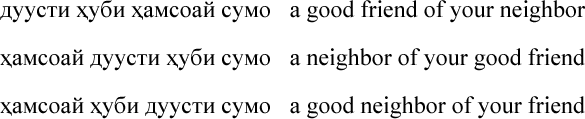

Tajik
There are 3,344,720 speakers of Tajik in Tajikistan (one of the Central Asian republics of the former Soviet Union) and another million speakers in surrounding countries. Tajik is an Indo-European language related most closely to Farsi (or Persian), the major language of Iran. Most literature in Tajik uses a version of the Cyrillic writing system. This is the system used in Russian, Ukrainian, Bulgarian and some other languages of Eastern Europe and Central Asia. You don't need to know how to read Cyrillic writing to solve this puzzle -- just use your common sense! One thing you will quickly realize is that words in Tajik are not arranged in the same order as they are in English.
Below are three phrases from the Tajik language with their English translations.
 |
Your task is to give the English translations of all four Tajik words. The possibilities are simply "good," "friend," "neighbor," and "your." The order of the words does the rest of the communicative work!: